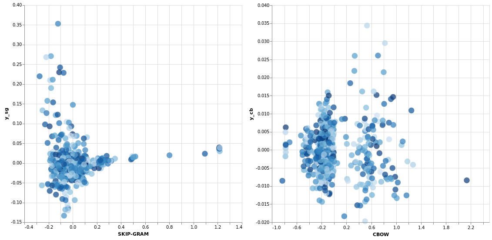

O Word2Vec parte de uma idéia muito simples e até certo ponto bastante lógica: relacionar uma palavra com as que estão em sua volta num texto. A partir desse conceito tão básico o Word2Vec acaba sendo uma base para outros algoritmos e não necessariamente um fim em si, a partir dele vamos implementar o cbow e o skip-gram nas anotações seguintes, por hora, vamos entender como funciona a criação dos pares que são a base do Word2Vec.
Pares
vamos imaginar que já tenhamos feito todo o processo descrito no post de introdução a esta série. O que buscamos nesta etapa é apenas definir uma "janela" que será a quantidade de palavras vizinhas à uma palavra que chamaremos de central e criar pares ligando essa palavra central às vizinhas, lógico que no código real trabalharemos com ids que representam palavras e não com as palavras em si.
ex.:
O cachorro comeu o trabalho da faculdade de novo
considerando a janela w = 2 teríamos:
[
("comeu", "o"),
("comeu", "cachorro"),
("comeu", "o"),
("comeu", "trabalho"),
...
]
Coisas óbvias a se deduzir: a partir da palavra central, as vezes que ela aparece é sempre 2*w e em relação às vizinhas, que chamamos de palavras de contexto, a proporção sempre será de 2*w para cada palavra central, isso será importante para o cbow e para o skip-gram.
Traduzindo esse procedimento bem básico em código, teremos:
w = 2 # janela (window)
pair_ids = []
text_size = len(sentences)
corpus_text = np.array(sentences)
mask = np.array([i for i in range(-w, w+1) if i is not 0])
for center_word in range(w, text_size-w):
center_word_id = word2id[corpus_text[center_word]]
for i in sentences[mask + center_word]:
context_word_id = word2id[i]
pair_ids.append([center_word_id, context_word_id])
pair_ids = np.array(pair_ids)
Esse será exatamente o código que teremos no método skip-gram. Mas por enquanto vamos aproveitar os métodos que usam o word2vec já implementados e vamos ver o que podemos extrair deles:
Gensim
No Gensim as operações são muito simples, basta passar para ele o texto processado de acordo com a introdução a este material:
model_sg = gensim.models.Word2Vec(sentences, min_count=1, window=2, compute_loss=True, sg=1)
model_cb = gensim.models.Word2Vec(sentences, min_count=1, window=2, compute_loss=True, sg=0)
No momento de criar o objeto, a única diferença nos parâmetros usados é no sg que a essa altura já está claro que signfica skip-gram e em vez de usar True ou False, usamos 1 ou 0 para definir qual método será usado.
A diferença real deles está no input e output pois ambos, cbow e skip-gram, são apenas redes neurais com pouquíssima diferença entre si como será visto posteiormente.
No cbow buscamos predizer a palavra central a partir das palavras de contexto e no skip-gram fazemos o contrário, a partir da palavra central buscamos prever as palavras de contexto.
model_sg.train(sentences, total_examples=len(sentences), epochs=100)
model_cb.train(sentences, total_examples=len(sentences), epochs=100)
Na prática, a função do treinamento é, a partir da proximidade entre as palavras, as camadas da rede neural vão se ajustando o que acaba indicando a proximidade de sentido entre elas, indo para um exemplo clássico queremos que seja possível, através de uma distribuição no plano cartesiano que o meio do caminho entre as palavras "rei" e "mulher" seja "rainha".
## visualizando
Primeiro vamos ver as dimensões na saída para cada palavra:
>>> model_sg["turing"].shape
(100,)
Como podemos perceber, nos é impossível fazer uma visualização de algo em 100 dimensões, para reduzi para 2 dimensões vamos usar o sklearn com a classe PCA, como o sklearn mantém o mesmo procedimento para praticamente tudo, vou me abster de colocar o código aqui que pode ser visto no jupyter notebook com o código completo. O importante é que ao final teremos esses gráficos para cada método:
obs: queria fazer algo mais interativo mas não consegui no momento

O Gensim já tem métodos nos objetos formados para encontrar as palavras mais próximas usando a similaridade de cossenos:
# repare que quanto mais próximo de 1, mais similar
>>> w = "cianeto"
>>> model_sg.wv.most_similar(w)
[('corpo', 0.9956434965133667),
('envenenamento', 0.9950364828109741),
('apesar', 0.9946295022964478),
('aparente', 0.9940468668937683),
('presença', 0.9939732551574707),
('descoberto', 0.9937050342559814),
('níveis', 0.9936593770980835),
('quanto', 0.993450403213501),
('testada', 0.9933900833129883),
('determinar', 0.9930295944213867)]
Agora comparando o CBOW e o Skip-Gram:
w = "morte"
sg_similar = model_sg.wv.similar_by_word(w)
cb_similar = model_cb.wv.similar_by_word(w)
md = "| skip-gram | cbow |\n|--|--|\n"
for i in zip(sg_similar, cb_similar):
md += f"| {i[0][0]} | {i[1][0]} |\n"
Markdown(md)
| skip-gram |
cbow |
| causa |
turing |
| defende |
maçã |
| setembro |
suicídio |
| acidental |
após |
| estabeleceu |
cianeto |
| campanha |
computador |
| necessariamente |
onde |
| copeland |
ser |
| suicídio |
anos |
| resultado |
ter |


{kind=link}